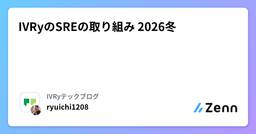
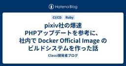
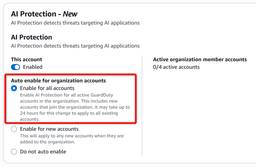
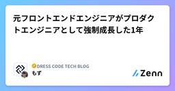
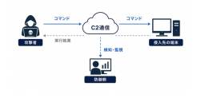
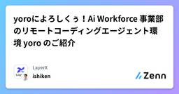
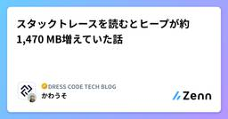
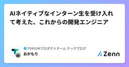
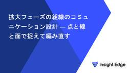

直近1週間の人気フィード
はてなブックマーク数を元に新着優先で並べ替え

個人情報を自社のDBに持たない設計は、どこまでできるのか 219
219 every Tech Blog
every Tech Blog
はじめに こんにちは、開発1部の新谷です。 最近、個人情報の漏洩のニュースが増えています。私は普段セキュリティを専門にしているわけではありませんが、漏洩への対策として、そもそも自社で個人情報を持たないように設計する方法はすぐに思いつくと思います。 ただ、それを具体的にどう実現するのかは、詳しく調べたことがありませんでした。そこで今回、認証や決済などを外部サービスに任せることで、自社のDBからどこま
1日前

今後のセキュリティの考え方 206 株式会社サイバーセキュリティクラウド テックブログのフィード
株式会社サイバーセキュリティクラウド テックブログのフィード
どうもサイバーセキュリティクラウド 脅威インテリジェンスグループの西川です。本日のウェビナー（【緊急開催セミナー】重大脆弱性を狙うサイバー攻撃への備え ～パッチ適用までのリスクを低減する「仮想パッチ」とは～）にお越しくださった皆様ありがとうございます。当日は時間の関係でお伝えしきれなかった、今後のセキュリティの考え方について、改めて書いてみます。特に AWS 環境の話をしていきますが、すべての環境
1日前

デザインは見た目ではなく意思決定だった ─ フロントエンドエンジニアがデザインシステム導入で学び直したこと 97 Findy Tech Blog
Findy Tech Blog
こんにちは。こんばんは。 ファインディでリードエンジニアをしている@shootaです。 これまでFindy Team+のフロントエンドリードとして、モノレポのリアーキテクチャやCIの高速化、AIレビューの仕組みづくりといった記事を書いてきました。 tech.findy.co.jp 今回はそこから少し離れ、別のプロダクトに一人で入ってデザインシステムを導入した話を書きます。といっても、デザインシステ
2日前
ERROR ログ1行から障害の一次対応を下準備する Claude Code スキルを作った 46 RAKUS Developers Blog | ラクス エンジニアブログ
RAKUS Developers Blog | ラクス エンジニアブログ
楽楽請求の開発チームに所属している takayama です。 本番環境で ERROR ログのアラートが届いたとき、最初の時間を何に使っていますか。 私は、過去の Issue を探したり、障害対応シートに情報を書き写したりする作業に、その時間の多くを使っていました。 そこで、ERROR ログを1行渡すだけで一次対応の下準備をしてくれる Claude Code のスキル「error-triage」を作
1日前

「見た目はいいけど、伝わらない」AIスライドを改善する試行錯誤 31 LayerX エンジニアブログ
LayerX エンジニアブログ
はじめまして、LayerX Ai Workforce事業部 FDEの近藤(@Konken)です。 いきなりですが、昨今、スライドの作成をAIに任せる機会が増えてきたのは皆さんも感じているところかと思います。特に Opus 5.5やgpt 6をはじめとするフロンティアモデルくらいからぐっとレベルが上がったように感じます。 私は前職が営業に近い仕事をしていたこともありスライドを作成する機会が多かったの
1日前

IVRyのSREの取り組み 2026冬 27 IVRyテックブログのフィード
こんにちは。IVRyでSREをしている渡部です。2024年の秋に入社してから、気づけば2年が経ちました。前回の記事では肉うどんとコーヒーにハマっていると書きましたが、もうどちらも飽きました。マイブームは東京巡りです。埼玉へ引っ越してきて東京の色々なところを巡っています。https://ryuichi1208.hateblo.jp/entry/2026/10/07/095532本記事は『IVRyのS
1日前

複数サービスに配信するembeddingの品質監視 ── 配信データ・ベクトル空間・推薦スコアの3観点 25 ZOZO TECH BLOG
ZOZO TECH BLOG
はじめに こんにちは、データシステム部MLOpsブロックの木村です。MLOpsブロックではZOZOTOWN、WEAR by ZOZOをはじめとして、弊社で提供するさまざまなサービスに関わるML機能を開発・運用しています。 ZOZOTOWNでは、ユーザーと商品を同じベクトル空間で表現するembeddingを、ホーム画面やメールマガジンなど複数の推薦機能で共有しています。このembeddingは、em
2日前

バリューストリームを激流にする 42 Hatena Developer Blog
Hatena Developer Blog
こんにちは、はてなCTOのid:motemenです。 AIによる環境激変の真っ只中にいるソフトウェアエンジニアをはじめとした皆様におかれましては、さまざまな施策に精をだされているところかと存じます。はてなでも面白いことはたくさんできていると思ってますが、それはゆくゆくご紹介するとして、今日ははてなの開発組織全体におけるとりくみをご紹介しようと思います。 AIがやってきた あらためて言うまでもありま
3日前

非機能はなぜ必要なのか 41 フューチャー技術ブログ
フューチャー技術ブログ
非機能要件はほとんどサービスレベル設計と同じもので、出発点は技術ではなく業務だと考えています。期待と約束の違い、数値にする順番、保証の対象について、社内の非機能要件ガイドラインを読んで感じた違和感から整理します。
2日前

プルリクエストのリスクを判定する仕組み 142 newmo 技術ブログ
newmo 技術ブログ
newmo のモノレポで、AI が Pull Request（PR）を読み、安全と判断したものを bot が承認する仕組み「riskjudge」を運用しています。 筆者の個人ブログのソフトウェアの産業革命では「検査を工程にする」という話を書いたのですが、この記事ではその工程の 1 つを、どう組み立てているかという技術の面から紹介します。 コーディングエージェントで PR を書く速さが上がった一方で
5日前
スキーマ分離型マルチテナントの DB 接続数増加を RDS Proxy で抑制できるか？ 25 MNTSQ Techブログ
MNTSQ Techブログ
はじめに SRE の寺島です。 MNTSQ の契約管理プロダクト（以下、CLM）では、テナントごとに MySQL のスキーマを分ける構成で Aurora MySQL に接続しています。このアーキテクチャは DB 接続数が増えやすく、運用上の大きな課題となっていました。 この記事では、接続数を抑えるために取り組んだ試行錯誤や検証結果をまとめています。同じようにスキーマ分離の構成で接続数の課題に直面し
3日前

pixiv社の爆速PHPアップデートを参考に、社内で Docker Official Image のビルドシステムを作った話 178 Classi開発者ブログ
Classi開発者ブログ
はじめに Classi のサービス開発を担当しているイノウエです。 2026年10月21日に、通称 PHP2Shell と呼ばれる深刻な脆弱性を修正する PHP 8系への緊急パッチが配信されました。 当社のサービスも一部で PHP が使用されており、緊急パッチの配布に備え私を含めた数名で待機しておりました。 しかし、コンテナのベースイメージには Docker Official Image の PH
5日前

Flutter やめました。電話アプリを Native にした理由 46
IVRyテックブログのフィード
はじめにこんにちは。株式会社IVRyで Engineering Managerをしています。tsutou です。アイブリーのモバイルアプリのユースケースは、電話の転送を受けたり、着信を折り返して発信したりすることがメインです。体験としては、アイブリーの対話型音声AIで、一次対応を自動化しながら、忙しい最中でも人が出ないといけない電話に応答する体験が、そのままエンドユーザーの体験になります。http
4日前

Kaigi on Rails 2026 - 「永続トークン」の話を、RFC を読んで掘り下げてみた 15 Techouse Developers Blog
Techouse Developers Blog
セッションでいう「永続トークン」とは、サービスに埋め込まれて使われるアクセストークンで、往々にして強い権限を持つもののことです。セッションの目的は、こうした無期限あるいは長寿命のトークンをなくすことです。sylph01 さんは管理者権限を持つトークンを『指輪物語』の The One Ring にたとえ、存在している限り悪用され続けるおそれがあると話していました。
2日前

Amazon GuardDuty AI Protection の有効化を強くおすすめしています 66 サーバーワークスエンジニアブログ
サーバーワークスエンジニアブログ
セキュリティサービス部 佐竹です。本ブログでは、2026年7月14日に提供開始された Amazon GuardDuty の「AI Protection」について、有効化を強く推奨する理由と、GUI からの有効化手順を解説します。
5日前

元フロントエンドエンジニアがプロダクトエンジニアとして強制成長した1年 14
DRESS CODE TECH BLOGのフィード
はじめにこんにちは、プロダクトエンジニアをしているもず（@mozu1206）です。2025年10月に Dress Codeに入社して、1年が経ちました。せっかくなので、この1年を振り返った記事を書いてみます！入社3ヶ月のときに、フロントエンド専任からプロダクトエンジニアになって「強制成長」している話を書きました。あの記事は、ほぼ初めて触るバックエンドやインフラがメインのタスクで どこで詰まって、ど
2日前

GitHub Security Advisoriesを使ったOSSの脆弱性対応手順（Fluentd v1.19.3・v1.19.4の実例） 13 ククログ
クリアコードではFluentdおよびFluent Packageのメンテナンスを継続的に行っています。2026年6月にリリースしたFluentd v1.19.3と、9月にリリースしたFluentd v1.19.4では、複数の脆弱性に対応しました。脆弱性対応では、コードの修正に加えて、報告者とのやり取り、非公開でのレビュー、CVE番号の申請、修正版のリリース、アドバイザリーの公開といった作業が必要に
2日前

Mackerelのログ機能を正式リリースします——熟練者の知見を、チームの力に 7 Mackerel ブログ #mackerelio
2026年11月1日（日）、Mackerelのログ機能を正式リリースします。Mackerelのログ機能は、サービス単位でログを検索し、調査に使った検索条件をチームで共有できる機能です。β期間中にご利用いただき、フィードバックをお寄せくださったみなさま、ありがとうございます。 「熟練者の知見を、チームの力に」という開発コンセプトのもと、7月16日のオープンβ版公開を経て、事前にお知らせしたとおり、1
1日前

LLMで日常会話に攻撃者の指示を紛れ込ませることはできるのか？（DEF CON 34登壇記） 33 NTT docomo Business Engineers' Blog
NTT docomo Business Engineers' Blog
Offensive Securityプロジェクトの紹介 DEF CONとは？ 発表内容の紹介 研究の背景：C2通信が普通の文章に見えたら？ 自然言語ステガノグラフィとは TextC2の構成と前提条件 手法1：両側でLLMを使う方式（算術符号化） 手法2：受信側にLLMを必要としない方式（サンプリング） 検証で分かった限界 防御側への示唆 研究倫理と検証範囲 DEF CONでの発表 おわりに こんに
5日前
Kaigi on Rails 2026 - Refining Active Record（Day2） 7 Techouse Developers Blog
Ruby 4.1で追加される予定の`Proc#refined`を使って、ActiveRecordのクエリを自然なRubyの式で書けるようにするgemであるactiverecord-refinedの話です。Rubyの新機能がどう活用されるのかに興味がありこのセッションを選びました。
2日前

Auto mode時代のClaude Codeを守る。検証済み10キットで始めるセキュリティ対策【全員・チーム・組織別】 11 株式会社ソニックムーブのフィード
はじめに株式会社ソニックムーブでフロントエンドエンジニアをしているazarashiです。前回の記事「検証済み10キットで始める、Claude Code時代のGitHubセキュリティ対策」では、GitHub のリポジトリを AI 時代の脅威から守る方法をまとめました。今回は、手元の PC で動く Claude Code そのものを守る方法です。Claude Code は、ファイルを読み、コマンドを実
3日前

ブラウザでPDF/Office文書などを表示できるビューアを作りながらAI slopについて考えた 38 フューチャー技術ブログ
Office ファイルや PDF をブラウザで表示するためのドキュメント形式 BDF とビューアを、AI に作ってもらいながら仕上げました。その過程で考えた、AI slop の正体についても書きます。
5日前

yoroによろしくぅ！Ai Workforce 事業部のリモートコーディングエージェント環境 yoro のご紹介 3 LayerXのフィード
Ai Workforce 事業部で SRE をしている石田です。先日、バクラク事業部から内製の Background Coding Agent、haro の紹介記事が出ました。https://tech.layerx.co.jp/entry/why-we-built-our-background-agent実は同じ LayerX の中で、Ai Workforce 事業部も似たものを作って使っています
2日前

CEDEC 2026に参加して、エモモのアセット検証を考え直した話 15
Mirrativ Tech Blog
こんにちは、Unityエンジニアのrioil（@rioil_dev）です。 2026年7月に開催されたCEDEC 2026に3日間現地参加しました。 画像認識技術による監修支援や、アセット制作作業を効率化するための取り組みの紹介など、ミラティブのエモモでも参考になるセッションが多くありました。 聴講したセッションのうち、REALITY社のTA（テクニカルアーティスト）チームに関する2つのセッション
5日前

すぐにパッチを当てられないときの選択肢 ― ALB の前に Cloudflare WAF を置く構成の検証 3 技術ブログ – infiniteloop
技術ブログ – infiniteloop
こんにちは。技術推進部のvjsigsigです。 先日の記事「緊急レベルのPHP脆弱性公表と当社の対応」では、PHP 本体の緊急脆弱性（通称 php2shell）への対応を紹介しました。今回はその続きです。 この対応をきっ…
3日前
Zod の契約で BE と UI のずれをテストし、振る舞いまで守る Schema-Driven UI 21 DRESS CODE TECH BLOGのフィード
はじめにこんにちは。ぷーじ（@yug1224）です。2026 年 10 月 24 日の Vue Fes Japan 2026 で、「契約で守るコンパウンドプロダクトのデザインシステム」というタイトルで登壇しました。この記事は、その発表の内容がもとになっています。https://vuefes.jp/2026/speaker/yug1224当日のブースや登壇の様子は Dress Code の note
5日前

スタックトレースを読むとヒープが約1,470 MB増えていた話 14
DRESS CODE TECH BLOGのフィード
はじめにDress Code 株式会社のかわうそです。API サーバーのメモリを測っていたら、スタックトレースを一度読んだだけで、ヒープが約 1,470 MB 増えていました。調べてみると、source-map-support が巨大な source map を読み込み、結果を保持していました。エラーの場所を教えてくれる処理に、これだけのメモリを使っていました。今回は、本番プロセスで source
6日前

YJIT で純粋な Ruby コードがC拡張より速くなる理由（翻訳） 3 TechRacho
TechRacho
概要 CC BY-NC-SA 4.0 International Deedに基づいて翻訳・公開いたします。 英語記事: Ruby Outperforms C: Breaking the Catch-22 | Rails at Scale 原文公開日: 2023年08月29日 原著者: Aaron Patterson CC BY-NC-SA 4.0 Deed | 表示 - 非営利 - 継承 4.0
3日前

【M3 Tech Blog 1000記事達成記念】エムスリーテックブログ1000記事を全部分析して分かった読まれる技術記事のヒミツ
3 エムスリーテックブログ
エムスリーテックブログ
こんにちは、エムスリーエンジニアリンググループ 業務執行役員 VPoEの河合(@vaaaaanquish)です。エムスリーテックブログは投稿記事が1000を超えました🎉 2017年9月、最初の記事から約9年。 合計185人のエンジニア・QA・デザイナー・プロダクトマネージャーが書いてきた1000本の記事を、今回すべて集めて分析しました。業界の時代の変遷から、エムスリーらしい記事まで、まるっと振り返
3日前

新卒が実務でAIを使って感じたこと 3 ポート株式会社 エンジニアブログのフィード
はじめにこんにちは、かっしーです。今年ポート株式会社に、新卒のバックエンドエンジニアとして入社しました。現在、業務では主にRuby on Railsを用いて新規機能の開発、既存機能の改善などを行なっています。この記事は、新卒エンジニア、特にまだ実務をしたことのない人に向けて書いています。 結論とても便利で業務は進めやすい一方、より一層将来に対する不安を強く感じるようになりました。今後エンジニアとし
4日前
オーケストレーションを前提とした体制づくり 4 Wantedly Engineer Blog
Wantedly Engineer Blog
こんにちは、ウォンテッドリー株式会社 執行役員 VPoE の要（@nory_kaname）です。今回のストーリーは...
4日前

AIDDで開発プロセスを再設計する — AI駆動開発の試行錯誤から得た学び 4LINEヤフー Tech Blog (LY Corporation Tech Blog
こんにちは。LINEヤフー株式会社 ショッピングSBUの新堂です。Yahoo!ショッピングでは、AIDD（AI Driven Development）の推進メンバーとともに開発プロセスの再設計に取り組...
5日前

3年分の反省をAIに読ませたら、同じ失敗をしているだけだった 3 フューチャー技術ブログ
3年分の「良かったこと・反省すること」メモをAIに分類させたら、同じ失敗を繰り返していただけでした。反省を読み返す役をAIに任せた仕組みと、卒業できる反省とできない反省の違いを考えます。
4日前
定期更新をやめて「聞かれたとき」に最新にする ── 社内ナレッジを AI につなぐ MCP サーバーで工夫したこと 4 RAKUS Developers Blog | ラクス エンジニアブログ
■ 目次 はじめに 社内ドキュメント検索MCPとは MCP は「AI が外部データ/サービスを使うための共通ルール」 中身は、社内ドキュメントを索引にした RAG 何ができるようになったか 聞くだけで探せる 「探す役」と「読む役」を分担する 検索以外にできること 使い始めるまでの手間を減らす 最初の版でぶつかった 2 つの壁 壁① 中身が古くなる 壁② 登録が続かない 使われ続けるための 3 つの
5日前

AIネイティブなインターン生を受け入れて考えた、これからの開発エンジニア 3 TOKIUMプロダクトチーム テックブログのフィード
こんにちは、TOKIUM デジタライズチームのおかもりです。お客様からお預かりした領収書などのデータ化作業を行うシステムと、その作業実績を管理するシステムの開発を担当しています。9/28〜10/2の5日間で、インターン生2名を受け入れました。受け入れを通して感じたことなどを、この記事に書きます。 受け入れの準備学生時代にエンジニア職のインターンを経験したことがありませんでした。そのため、今回はじめ
6日前

拡大フェーズの組織のコミュニケーション設計 ― 点と線と面で捉えて編み直す 3 Insight Edge Tech Blog
Insight Edge Tech Blog
こんにちは。Insight Edgeのデザイン部、共創設計チームの小森谷です。住友商事グループの企業ではAI活用を推進する組織の伴走支援を担当しつつ、社内の議論の場づくりや部門の会議体設計などの組織づくりにも取り組んでいます。 チームが拡大すると、人と会議体が増え、それまで暗黙のうちに機能していたやりとりが機能しにくくなります。たとえば、次のような状況はないでしょうか。 定例の目的が曖昧で、リーダ
6日前